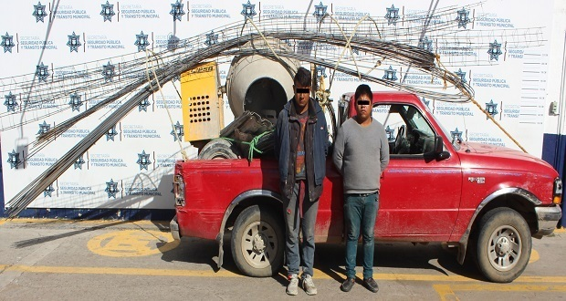

Evita que te roben en una obra de construcción
El robo es una amenaza para los presupuestos de obra
ya que pueden generar una gran merma, son tan comunes que en muchos
de los presupuestos ya se estima un porcentaje para ese rublo.
Es común que en México existan personas amantes de lo ajeno laborando
en obras de construcción, es por eso que en este post queremos ayudarte
a que no te pase esa molesta situación.
-
1. Contrata un velador
Lo más común es contratar a un velador para que se cuide tu obra y materiales de construcción en la noche durante el periodo que dure tu obra. Contratar a esta persona para velar durante la noche genera un costo alrededor de $1,100.00 pesos semanales más el seguro del trabajador.
-
2. Habilita una casa vacía con protecciones en puertas y ventanas
Otra opción es conseguir una casa vacía para guardar los materiales y herramientas, habilitarla para que este segura y éstos puedan permanecer seguros en el interior durante la noche. Este tip se te facilita si construyes más de una casa y ya tienes una terminada. Sin embargo aún permanece el riesgo de que un ladrón encuentre la forma de meterse para sacar herramientas y materiales valiosos.
-
3. Poner cámaras de seguridad
Aprovechar las tecnologías que tenemos hoy en día es algo que también podemos hacer, este tip tiende hacia un acercamiento más preventivo con cierto tipo de ladrones. Con señalamientos de advertencia y cámaras de vigilancia más de un ladrón pasará por alto robarte para no exponerse y ser arrestado por las autoridades.
-
4. Tener un control del inventario de materiales.
Llevar un inventario de todos los materiales que se reciben y utilizan, podemos empezar a llevar un control de notas de todo lo que entra y sale del almacén con recibos de solicitud y entrega. Esto puede ayudar a evidenciar quien solicita material más del necesario y a quien se le entrega.
-
5. Surtir el material exacto para las actividades del día
Surtir cada día el material en la obra es otra practica que permite reducir el riesgo de que te sigan robando material en obra. Ya que al surtir lo necesario en el día, no quedará un inventario físico que trasnoche en la obra con peligro a ser robado.
-
6. Hacer que las herramientas se puedan rastrear, RFID:
Otra medida un poco más futurista es empezar a utilizar la tecnología RFID que es un identificador de radiofrecuencia que utiliza campos electromagnéticos para poder dar seguimientos a nuestras herramientas y así poder reducir los robos de la obra.
-
7. Contrata una Minibodega
Rentar una mini bodega es una gran opción debido a que juntan un par de tips de los anteriores y representan un menor costo. Ya cuentan con cámaras de seguridad, vigilancia las 24 horas y se tiene un acceso controlado para que puedas decidir quien accede (y quien no) a tu bodega.